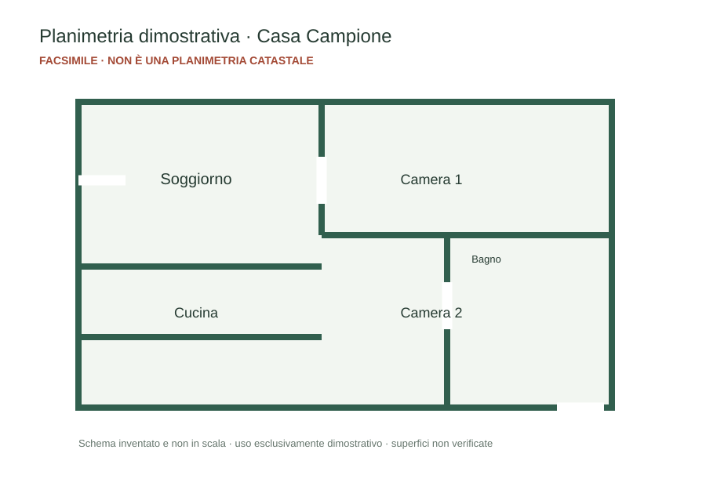

FACSIMILE · SOLO DEMO
Scheda immobile
Casa Campione · Via Esempio 10, Pescara
Appartamento dimostrativo · 3 locali · 92 m² indicativi · prezzo inventato € 245.000.
Abitazione dimostrativa con soggiorno, cucina, due camere e un bagno. Dati inventati per mostrare gli allegati nella piattaforma.
AVVISO Documento privo di valore legale, catastale, energetico e contrattuale.
FACSIMILE · SOLO DEMO
Checklist documenti
Casa Campione · Via Esempio 10, Pescara
✓ Incarico di vendita · esempio
✓ Scheda immobile · esempio
○ Attestato energetico · da richiedere al tecnico
○ Planimetria catastale · da richiedere al professionista
Checklist inventata: non attesta la presenza o validità di documenti reali.
FACSIMILE · NON CATASTALE
Planimetria dimostrativa
Casa Campione · schema non in scala

Disegno inventato, non è una planimetria catastale e non può essere usato per pratiche o compravendite.